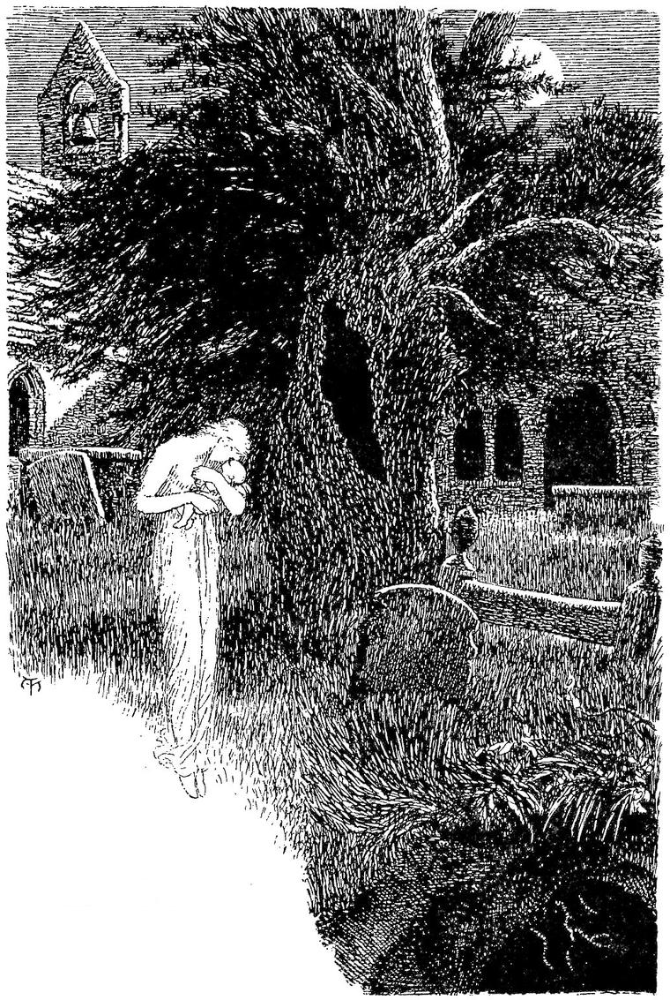

“In still rest, in changeless simplicity, I bear, uninterrupted, the consciousness of the whole of Humanity within me.” SCHLEIERMACHER, Monologen.
In all thy speech appear,
That what to th’eye a beauteous face,
That thy tongue is to the ear.”
COWLEY.
The water was deep to the very edge; and I sprang from the little boat upon a soft grassy turf. The island seemed rich with a profusion of all grasses and low flowers. All delicate lowly things were most plentiful; but no trees rose skywards, not even a bush overtopped the tall grasses, except in one place near the cottage I am about to describe, where a few plants of the gum-cistus, which drops every night all the blossoms that the day brings forth, formed a kind of natural arbour. The whole island lay open to the sky and sea. It rose nowhere more than a few feet above the level of the waters, which flowed deep all around its border. Here there seemed to be neither tide nor storm. A sense of persistent calm and fulness arose in the mind at the sight of the slow, pulse-like rise and fall of the deep, clear, unrippled waters against the bank of the island, for shore it could hardly be called, being so much more like the edge of a full, solemn river. As I walked over the grass towards the cottage, which stood at a little distance from the bank, all the flowers of childhood looked at me with perfect child-eyes out of the grass. My heart, softened by the dreams through which it had passed, overflowed in a sad, tender love towards them. They looked to me like children impregnably fortified in a helpless confidence. The sun stood half-way down the western sky, shining very soft and golden; and there grew a second world of shadows amidst the world of grasses and wild flowers.
The cottage was square, with low walls, and a high pyramidal roof thatched with long reeds, of which the withered blossoms hung over all the eaves. It is noticeable that most of the buildings I saw in Fairy Land were cottages. There was no path to a door, nor, indeed, was there any track worn by footsteps in the island.
The cottage rose right out of the smooth turf. It had no windows that I could see; but there was a door in the centre of the side facing me, up to which I went. I knocked, and the sweetest voice I had ever heard said, “Come in.” I entered. A bright fire was burning on a hearth in the centre of the earthern floor, and the smoke found its way out at an opening in the centre of the pyramidal roof. Over the fire hung a little pot, and over the pot bent a woman-face, the most wonderful, I thought, that I had ever beheld. For it was older than any countenance I had ever looked upon. There was not a spot in which a wrinkle could lie, where a wrinkle lay not. And the skin was ancient and brown, like old parchment. The woman’s form was tall and spare: and when she stood up to welcome me, I saw that she was straight as an arrow. Could that voice of sweetness have issued from those lips of age? Mild as they were, could they be the portals whence flowed such melody? But the moment I saw her eyes, I no longer wondered at her voice: they were absolutely young—those of a woman of five-and-twenty, large, and of a clear gray. Wrinkles had beset them all about; the eyelids themselves were old, and heavy, and worn; but the eyes were very incarnations of soft light. She held out her hand to me, and the voice of sweetness again greeted me, with the single word, “Welcome.” She set an old wooden chair for me, near the fire, and went on with her cooking. A wondrous sense of refuge and repose came upon me. I felt like a boy who has got home from school, miles across the hills, through a heavy storm of wind and snow. Almost, as I gazed on her, I sprang from my seat to kiss those old lips. And when, having finished her cooking, she brought some of the dish she had prepared, and set it on a little table by me, covered with a snow-white cloth, I could not help laying my head on her bosom, and bursting into happy tears. She put her arms round me, saying, “Poor child; poor child!”
As I continued to weep, she gently disengaged herself, and, taking a spoon, put some of the food (I did not know what it was) to my lips, entreating me most endearingly to swallow it. To please her, I made an effort, and succeeded. She went on feeding me like a baby, with one arm round me, till I looked up in her face and smiled: then she gave me the spoon and told me to eat, for it would do me good. I obeyed her, and found myself wonderfully refreshed. Then she drew near the fire an old-fashioned couch that was in the cottage, and making me lie down upon it, sat at my feet, and began to sing. Amazing store of old ballads rippled from her lips, over the pebbles of ancient tunes; and the voice that sang was sweet as the voice of a tuneful maiden that singeth ever from very fulness of song. The songs were almost all sad, but with a sound of comfort. One I can faintly recall. It was something like this:
Sing, All alone I lie:
Little recked he where’er he yode,
All alone, up in the sky.
All alone I lie:
His cry might have wakened the dead men near,
All alone, up in the sky.
Lapt in the mouldy winding-sheet.
Still in his place, like a horse of wood,
But the sweat in streams from his fetlocks ran.
And sat in the midst of her moony hair.
In the dreamful moon they lay and slept;
Lay and slept in the moonbeams slow.
Over the stubble left behind:
To see thee weeping and wailing so.
“Can the sword of a warrior set it right?
As a cup of water a feverish child,
To sleep the sleep a dead lady should?
As if I had known thee for evermore.
To sit with thee in the moon away
To rest on a bosom that is not dead.”
The lady sprang up with a strange ghost-cry,
And she flung her white ghost-arms on high:
And it lengthened out till it died away;
And the yew-trees above they shuddered and groaned.
Will he kill the poor ghost yet again?
‘Can I have dreamed who have not slept?’
Whether I dreamed, or thou wert good.
I awoke, and found I was with my child.”
How is it? Thou wert but a village maid,
Though thin, and wan, and past delight.”
And she pressed her temples hard the while.
Do more than knighthood for a man.”
Is she out to-night in the ghost’s sunshine?”

At hide-and-seek, with Apostle John.
Where the twelve are standing in glorious show,
But one comes down to play with her.
For good St. John my child will keep.”
Never saw I a woman so fair.”
But do not touch me, or woe will betide.
This gladness betokens some further woe.
For thou lovest me yet—though but as a man.”
Away through the tombstones thundered the steed,
But the knight he kneeled by the lady’s side;
Rapt in an everlasting kiss:
And his eyes alone on her beauty lie.
He kneeled by the lady, lapt in her shroud.
Dead night was sweeter than living day.
Who made her and found her so ghostly sad,
To make them blessed who love so much.
And one night I will come to thee.
She will not tremble at clang of strife;
Behind the door, if he cometh in.”
Often walked in the moonlight pale.
Full orbed moonlight filled his room;
Fell a ghostly gleam on the outer floor;
That murmured words they often heard.
Through the chancel window, and good St. John
And the mother was free till the morning light,
With Aglovaile till the break of day.
And dumb as the moon in the topmost sky.
And dreamed a dream wherein he wept.
But this night he wept full bitterly.
Out of the dark: ’twas the eve of St. John.
Where the maiden of old beside him stood;
And he sought her in vain through the pathless day,
And thought he had dreamt the dream before.
And lo! beside him the ghost-girl shone;
Over the sea of his dream’s unrest;
That the heart seeks ever, night or noon:
He clasped to his bosom the radiant ghost.
With upturn’d white face, cold and blank,
And she came no more to Sir Aglovaile.
Sobbed and wailed like a chidden child.
This was one of the simplest of her songs, which, perhaps, is the cause of my being able to remember it better than most of the others. While she sung, I was in Elysium, with the sense of a rich soul upholding, embracing, and overhanging mine, full of all plenty and bounty. I felt as if she could give me everything I wanted; as if I should never wish to leave her, but would be content to be sung to and fed by her, day after day, as years rolled by. At last I fell asleep while she sang.
When I awoke, I knew not whether it was night or day. The fire had sunk to a few red embers, which just gave light enough to show me the woman standing a few feet from me, with her back towards me, facing the door by which I had entered. She was weeping, but very gently and plentifully. The tears seemed to come freely from her heart. Thus she stood for a few minutes; then, slowly turning at right angles to her former position, she faced another of the four sides of the cottage. I now observed, for the first time, that here was a door likewise; and that, indeed, there was one in the centre of every side of the cottage.
When she looked towards the second door, her tears ceased to flow, but sighs took their place. She often closed her eyes as she stood; and every time she closed her eyes, a gentle sigh seemed to be born in her heart, and to escape at her lips. But when her eyes were open, her sighs were deep and very sad, and shook her whole frame. Then she turned towards the third door, and a cry as of fear or suppressed pain broke from her; but she seemed to hearten herself against the dismay, and to front it steadily; for, although I often heard a slight cry, and sometimes a moan, yet she never moved or bent her head, and I felt sure that her eyes never closed. Then she turned to the fourth door, and I saw her shudder, and then stand still as a statue; till at last she turned towards me and approached the fire. I saw that her face was white as death. But she gave one look upwards, and smiled the sweetest, most child-innocent smile; then heaped fresh wood on the fire, and, sitting down by the blaze, drew her wheel near her, and began to spin. While she spun, she murmured a low strange song, to which the hum of the wheel made a kind of infinite symphony. At length she paused in her spinning and singing, and glanced towards me, like a mother who looks whether or not her child gives signs of waking. She smiled when she saw that my eyes were open. I asked her whether it was day yet. She answered, “It is always day here, so long as I keep my fire burning.”
I felt wonderfully refreshed; and a great desire to see more of the island awoke within me. I rose, and saying that I wished to look about me, went towards the door by which I had entered.
“Stay a moment,” said my hostess, with some trepidation in her voice. “Listen to me. You will not see what you expect when you go out of that door. Only remember this: whenever you wish to come back to me, enter wherever you see this mark.”
She held up her left hand between me and the fire. Upon the palm, which appeared almost transparent, I saw, in dark red, a mark like this —> which I took care to fix in my mind.
She then kissed me, and bade me good-bye with a solemnity that awed me; and bewildered me too, seeing I was only going out for a little ramble in an island, which I did not believe larger than could easily be compassed in a few hours’ walk at most. As I went she resumed her spinning.
I opened the door, and stepped out. The moment my foot touched the smooth sward, I seemed to issue from the door of an old barn on my father’s estate, where, in the hot afternoons, I used to go and lie amongst the straw, and read. It seemed to me now that I had been asleep there. At a little distance in the field, I saw two of my brothers at play. The moment they caught sight of me, they called out to me to come and join them, which I did; and we played together as we had done years ago, till the red sun went down in the west, and the gray fog began to rise from the river. Then we went home together with a strange happiness. As we went, we heard the continually renewed larum of a landrail in the long grass. One of my brothers and I separated to a little distance, and each commenced running towards the part whence the sound appeared to come, in the hope of approaching the spot where the bird was, and so getting at least a sight of it, if we should not be able to capture the little creature. My father’s voice recalled us from trampling down the rich long grass, soon to be cut down and laid aside for the winter. I had quite forgotten all about Fairy Land, and the wonderful old woman, and the curious red mark.
My favourite brother and I shared the same bed. Some childish dispute arose between us; and our last words, ere we fell asleep, were not of kindness, notwithstanding the pleasures of the day. When I woke in the morning, I missed him. He had risen early, and had gone to bathe in the river. In another hour, he was brought home drowned. Alas! alas! if we had only gone to sleep as usual, the one with his arm about the other! Amidst the horror of the moment, a strange conviction flashed across my mind, that I had gone through the very same once before.
I rushed out of the house, I knew not why, sobbing and crying bitterly. I ran through the fields in aimless distress, till, passing the old barn, I caught sight of a red mark on the door. The merest trifles sometimes rivet the attention in the deepest misery; the intellect has so little to do with grief. I went up to look at this mark, which I did not remember ever to have seen before. As I looked at it, I thought I would go in and lie down amongst the straw, for I was very weary with running about and weeping. I opened the door; and there in the cottage sat the old woman as I had left her, at her spinning-wheel.
“I did not expect you quite so soon,” she said, as I shut the door behind me. I went up to the couch, and threw myself on it with that fatigue wherewith one awakes from a feverish dream of hopeless grief.
The old woman sang:
May faint from the sky;
But love, once uplighted,
Will never more die.
From eyes will depart:
It walketh, in whiteness,
The halls of the heart.
Ere she had ceased singing, my courage had returned. I started from the couch, and, without taking leave of the old woman, opened the door of Sighs, and sprang into what should appear.
I stood in a lordly hall, where, by a blazing fire on the hearth, sat a lady, waiting, I knew, for some one long desired. A mirror was near me, but I saw that my form had no place within its depths, so I feared not that I should be seen. The lady wonderfully resembled my marble lady, but was altogether of the daughters of men, and I could not tell whether or not it was she.
It was not for me she waited. The tramp of a great horse rang through the court without. It ceased, and the clang of armour told that his rider alighted, and the sound of his ringing heels approached the hall. The door opened; but the lady waited, for she would meet her lord alone. He strode in: she flew like a home-bound dove into his arms, and nestled on the hard steel. It was the knight of the soiled armour. But now the armour shone like polished glass; and strange to tell, though the mirror reflected not my form, I saw a dim shadow of myself in the shining steel.
“O my beloved, thou art come, and I am blessed.”
Her soft fingers speedily overcame the hard clasp of his helmet; one by one she undid the buckles of his armour; and she toiled under the weight of the mail, as she would carry it aside. Then she unclasped his greaves, and unbuckled his spurs; and once more she sprang into his arms, and laid her head where she could now feel the beating of his heart. Then she disengaged herself from his embrace, and, moving back a step or two, gazed at him. He stood there a mighty form, crowned with a noble head, where all sadness had disappeared, or had been absorbed in solemn purpose. Yet I suppose that he looked more thoughtful than the lady had expected to see him, for she did not renew her caresses, although his face glowed with love, and the few words he spoke were as mighty deeds for strength; but she led him towards the hearth, and seated him in an ancient chair, and set wine before him, and sat at his feet.
“I am sad,” he said, “when I think of the youth whom I met twice in the forests of Fairy Land; and who, you say, twice, with his songs, roused you from the death-sleep of an evil enchantment. There was something noble in him, but it was a nobleness of thought, and not of deed. He may yet perish of vile fear.”
“Ah!” returned the lady, “you saved him once, and for that I thank you; for may I not say that I somewhat loved him? But tell me how you fared, when you struck your battle-axe into the ash-tree, and he came and found you; for so much of the story you had told me, when the beggar-child came and took you away.”
“As soon as I saw him,” rejoined the knight, “I knew that earthly arms availed not against such as he; and that my soul must meet him in its naked strength. So I unclasped my helm, and flung it on the ground; and, holding my good axe yet in my hand, gazed at him with steady eyes. On he came, a horror indeed, but I did not flinch. Endurance must conquer, where force could not reach. He came nearer and nearer, till the ghastly face was close to mine. A shudder as of death ran through me; but I think I did not move, for he seemed to quail, and retreated. As soon as he gave back, I struck one more sturdy blow on the stem of his tree, that the forest rang; and then looked at him again. He writhed and grinned with rage and apparent pain, and again approached me, but retreated sooner than before. I heeded him no more, but hewed with a will at the tree, till the trunk creaked, and the head bowed, and with a crash it fell to the earth. Then I looked up from my labour, and lo! the spectre had vanished, and I saw him no more; nor ever in my wanderings have I heard of him again.”
“Well struck! well withstood! my hero,” said the lady.
“But,” said the knight, somewhat troubled, “dost thou love the youth still?”
“Ah!” she replied, “how can I help it? He woke me from worse than death; he loved me. I had never been for thee, if he had not sought me first. But I love him not as I love thee. He was but the moon of my night; thou art the sun of my day, O beloved.”
“Thou art right,” returned the noble man. “It were hard, indeed, not to have some love in return for such a gift as he hath given thee. I, too, owe him more than words can speak.”
Humbled before them, with an aching and desolate heart, I yet could not restrain my words:
“Let me, then, be the moon of thy night still, O woman! And when thy day is beclouded, as the fairest days will be, let some song of mine comfort thee, as an old, withered, half-forgotten thing, that belongs to an ancient mournful hour of uncompleted birth, which yet was beautiful in its time.”
They sat silent, and I almost thought they were listening. The colour of the lady’s eyes grew deeper and deeper; the slow tears grew, and filled them, and overflowed. They rose, and passed, hand in hand, close to where I stood; and each looked towards me in passing. Then they disappeared through a door which closed behind them; but, ere it closed, I saw that the room into which it opened was a rich chamber, hung with gorgeous arras. I stood with an ocean of sighs frozen in my bosom. I could remain no longer. She was near me, and I could not see her; near me in the arms of one loved better than I, and I would not see her, and I would not be by her. But how to escape from the nearness of the best beloved? I had not this time forgotten the mark; for the fact that I could not enter the sphere of these living beings kept me aware that, for me, I moved in a vision, while they moved in life. I looked all about for the mark, but could see it nowhere; for I avoided looking just where it was. There the dull red cipher glowed, on the very door of their secret chamber. Struck with agony, I dashed it open, and fell at the feet of the ancient woman, who still spun on, the whole dissolved ocean of my sighs bursting from me in a storm of tearless sobs. Whether I fainted or slept, I do not know; but, as I returned to consciousness, before I seemed to have power to move, I heard the woman singing, and could distinguish the words:
O Love! in thy glory go,
In a rosy mist and a moony maze,
O’er the pathless peaks of snow.
That moans like a wounded dove?
One wine is left in the broken bowl!—
’Tis—To love, and love and love.
Now I could weep. When she saw me weeping, she sang:
Than a sea of waves to win;
To live in the love that floweth forth,
Than the love that cometh in.
Flowing, and free, and sure;
For a cistern of love, though undefiled,
Keeps not the spirit pure.
I rose from the earth, loving the white lady as I had never loved her before.
Then I walked up to the door of Dismay, and opened it, and went out. And lo! I came forth upon a crowded street, where men and women went to and fro in multitudes. I knew it well; and, turning to one hand, walked sadly along the pavement. Suddenly I saw approaching me, a little way off, a form well known to me (well-known!—alas, how weak the word!) in the years when I thought my boyhood was left behind, and shortly before I entered the realm of Fairy Land. Wrong and Sorrow had gone together, hand-in-hand as it is well they do.
Unchangeably dear was that face. It lay in my heart as a child lies in its own white bed; but I could not meet her.
“Anything but that,” I said, and, turning aside, sprang up the steps to a door, on which I fancied I saw the mystic sign. I entered—not the mysterious cottage, but her home. I rushed wildly on, and stood by the door of her room.
“She is out,” I said, “I will see the old room once more.”
I opened the door gently, and stood in a great solemn church. A deep-toned bell, whose sounds throbbed and echoed and swam through the empty building, struck the hour of midnight. The moon shone through the windows of the clerestory, and enough of the ghostly radiance was diffused through the church to let me see, walking with a stately, yet somewhat trailing and stumbling step, down the opposite aisle, for I stood in one of the transepts, a figure dressed in a white robe, whether for the night, or for that longer night which lies too deep for the day, I could not tell. Was it she? and was this her chamber? I crossed the church, and followed. The figure stopped, seemed to ascend as it were a high bed, and lay down. I reached the place where it lay, glimmering white. The bed was a tomb. The light was too ghostly to see clearly, but I passed my hand over the face and the hands and the feet, which were all bare. They were cold—they were marble, but I knew them. It grew dark. I turned to retrace my steps, but found, ere long, that I had wandered into what seemed a little chapel. I groped about, seeking the door. Everything I touched belonged to the dead. My hands fell on the cold effigy of a knight who lay with his legs crossed and his sword broken beside him. He lay in his noble rest, and I lived on in ignoble strife. I felt for the left hand and a certain finger; I found there the ring I knew: he was one of my own ancestors. I was in the chapel over the burial-vault of my race. I called aloud: “If any of the dead are moving here, let them take pity upon me, for I, alas! am still alive; and let some dead woman comfort me, for I am a stranger in the land of the dead, and see no light.” A warm kiss alighted on my lips through the dark. And I said, “The dead kiss well; I will not be afraid.” And a great hand was reached out of the dark, and grasped mine for a moment, mightily and tenderly. I said to myself: “The veil between, though very dark, is very thin.”
Groping my way further, I stumbled over the heavy stone that covered the entrance of the vault: and, in stumbling, descried upon the stone the mark, glowing in red fire. I caught the great ring. All my effort could not have moved the huge slab; but it opened the door of the cottage, and I threw myself once more, pale and speechless, on the couch beside the ancient dame. She sang once more:
High o’er the broken wave;
Thou fallest with a fearful start
But not into thy grave;
For, waking in the morning’s light,
Thou smilest at the vanished night
Into the fainting gloom;
But ere the coming terrors come,
Thou wak’st—where is the tomb?
Thou wak’st—the dead ones smile above,
With hovering arms of sleepless love.
She paused; then sang again:
The tears they are the same;
We sigh for longing, and relief;
The sighs have but one name,
Are moans that are not sad
The pangs of death are throbs of life,
Its sighs are sometimes glad.
It is Earth’s only spot
That feebly flickers back the light
The living seeth not.
I fell asleep, and slept a dreamless sleep, for I know not how long. When I awoke, I found that my hostess had moved from where she had been sitting, and now sat between me and the fourth door.
I guessed that her design was to prevent my entering there. I sprang from the couch, and darted past her to the door. I opened it at once and went out. All I remember is a cry of distress from the woman: “Don’t go there, my child! Don’t go there!” But I was gone.
I knew nothing more; or, if I did, I had forgot it all when I awoke to consciousness, lying on the floor of the cottage, with my head in the lap of the woman, who was weeping over me, and stroking my hair with both hands, talking to me as a mother might talk to a sick and sleeping, or a dead child. As soon as I looked up and saw her, she smiled through her tears; smiled with withered face and young eyes, till her countenance was irradiated with the light of the smile. Then she bathed my head and face and hands in an icy cold, colourless liquid, which smelt a little of damp earth. Immediately I was able to sit up. She rose and put some food before me. When I had eaten, she said: “Listen to me, my child. You must leave me directly!”
“Leave you!” I said. “I am so happy with you. I never was so happy in my life.”
“But you must go,” she rejoined sadly. “Listen! What do you hear?”
“I hear the sound as of a great throbbing of water.”
“Ah! you do hear it? Well, I had to go through that door—the door of the Timeless” (and she shuddered as she pointed to the fourth door)—“to find you; for if I had not gone, you would never have entered again; and because I went, the waters around my cottage will rise and rise, and flow and come, till they build a great firmament of waters over my dwelling. But as long as I keep my fire burning, they cannot enter. I have fuel enough for years; and after one year they will sink away again, and be just as they were before you came. I have not been buried for a hundred years now.” And she smiled and wept.
“Alas! alas!” I cried. “I have brought this evil on the best and kindest of friends, who has filled my heart with great gifts.”
“Do not think of that,” she rejoined. “I can bear it very well. You will come back to me some day, I know. But I beg you, for my sake, my dear child, to do one thing. In whatever sorrow you may be, however inconsolable and irremediable it may appear, believe me that the old woman in the cottage, with the young eyes” (and she smiled), “knows something, though she must not always tell it, that would quite satisfy you about it, even in the worst moments of your distress. Now you must go.”
“But how can I go, if the waters are all about, and if the doors all lead into other regions and other worlds?”
“This is not an island,” she replied; “but is joined to the land by a narrow neck; and for the door, I will lead you myself through the right one.”
She took my hand, and led me through the third door; whereupon I found myself standing in the deep grassy turf on which I had landed from the little boat, but upon the opposite side of the cottage. She pointed out the direction I must take, to find the isthmus and escape the rising waters.
Then putting her arms around me, she held me to her bosom; and as I kissed her, I felt as if I were leaving my mother for the first time, and could not help weeping bitterly. At length she gently pushed me away, and with the words, “Go, my son, and do something worth doing,” turned back, and, entering the cottage, closed the door behind her. I felt very desolate as I went.